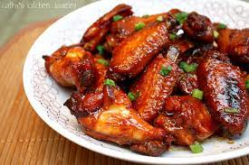

Chicken Wings

Caramalized Chicken Wing Recipe
This is a delicious baked chicken wing recipe. Your famiyl will be left asking for more after they're all gone. Super simple recipe with pantry ingredients.
Make sure to bookmark this recipes, you'll be sure to fall in love!
Ingredients
- 1 cup water
- 1/2 cup white sugar
- 1/3 cup soy sauce
- 2 tablespoons peanut butter
- 1 tablespoon honey
- 2 teaspoons wine vinegar
- 1 tablespoon minces garlic
- 12 large chicken wings
- 1 teaspoon sesame seeds
Steps
- Preheat oven to 400 degrees
- In a large skillet over medium heat, mix together the water, sugar,
soy sauce, peanut butter, honey, wine vinegar, and garlic until
smooth and the sugar has dissolved
- Mix wings and sauce together and make sure wings are full covered in sauce
- Place mixure on baking sheet and bake for 30 minutes
- Sprinkle with seasme seeds once finished baking